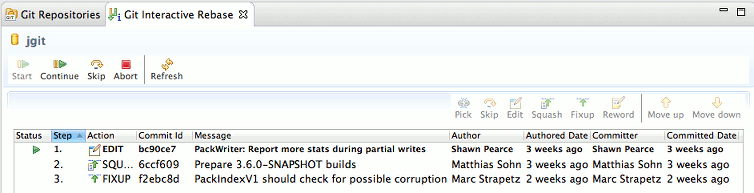
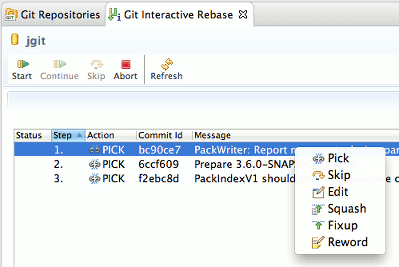
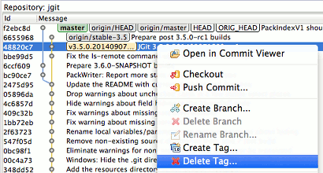
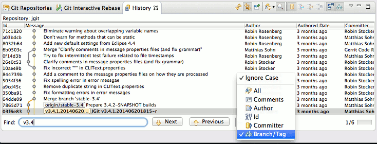
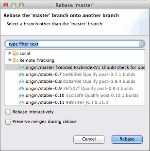
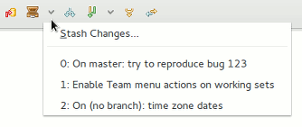
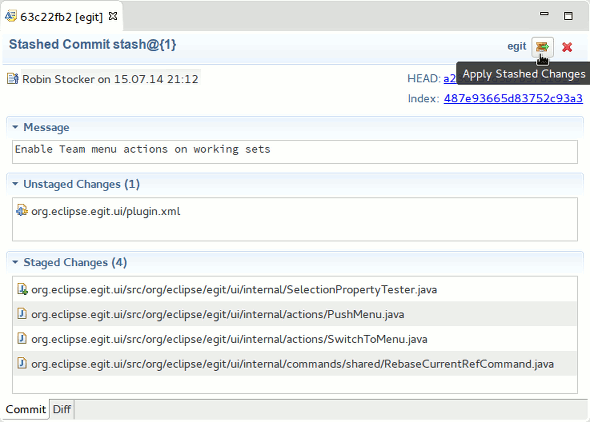
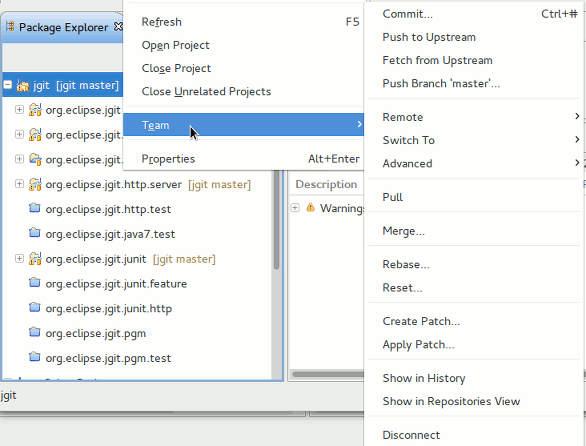
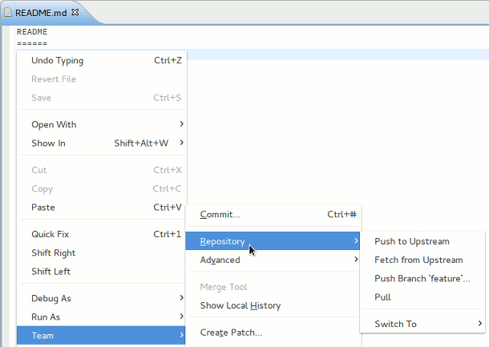
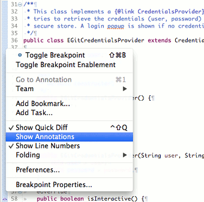

| EGit 3.5 New and Noteworthy |
|
|

|
|
|
Bug Fixes |
EGit
Features
Interactive Rebase View
- Allow to move multiple commits by drag & drop
- Indicate order of steps and allow to change it by clicking on header

- Add context menu for plan modification

History View
- Add support for cherry-picking multiple commits at once

- Add support for reverting multiple commits at once.
- Add menu action for deleting tags

- Use separate diff viewer instead of embedding into message
- Support searching for branches/tags with find toolbar

- Make compare/open actions work with renamed/moved files
- Enable "Create Patch" for first commit in the History view
Rebase
- Offer interactive and preserve merges options when selecting rebase target

Stash Support
- Add "Stashes" menu to Team context menu and toolbar


- Optimize layouts of commit and stash viewer
- Add "Team" menu on working sets

- Add "Repository" submenu in Team menu of files and folders

GitHub Connector
- PullRequest supports the review_comments field
Usability Improvements
- Add "Show Annotations" to ruler menu of revision editor

- Staging view
- Sort content by name if file names are shown first
- Repositories view
- Sort tags in natural order
- Sort folders before files in working directory
- Commit dialog
- Add "Select for Commit" to files context menu
- Replace help button with link to Staging view
- Cherry-pick
- Show a rebase result dialog if cherry-picking fails
- Provide more context in cherry-pick confirmation dialog
- Push
- Simple push wizard links to Advanced push wizard
- "Commit and Push" opens simple push wizard if no push refspec exists or current branch doesn't track a remote branch
- Push Branch: Don't suggest branch name if upstream branch is a local branch
- Assist in Push dialog and allow to push to custom refs
- Show details about branch and commit in simple push dialog
- Make source/destination branch more clear in push result dialog/confirmation
- Staging view
- Improved performance on large repositories/working directories
- Don't reload repository on selection if repository stays the same
- Use faster method of setting styles in commit message details
|
|
|
|
|
Bug Fixes |